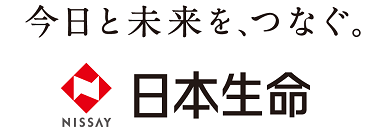

싱가포르
싱가포르 영국
영국 캐나다
캐나다
日本生命 (Nippon Life)
ニッセイ みらいのカタチ 終身保険
종신보험
- 가입 3~75세, 평생 사망 보장
- 해약환급금이 있어 자산 형성 기능
- 납입이 끝난 뒤 사망 보장을 연금으로 바꿔 받을 수 있음
 홍콩
홍콩나라별 시가총액 Top 3
본사가 그 나라인 상장 은행·증권사를 같은 날 종가 시가총액으로 줄 세웠습니다.
왜 해외 금융인지, 세금은 어떻게 되는지
해외 상품의 이유·이점과 함께 볼 위험, 한국 거주자의 기본 세금과 나라별 조세조약을 개략적으로 정리했습니다.
순위는 통계로, 설명은 원문으로
판매 순위의 근거와 한국 거주자가 먼저 확인할 것을 정리했습니다.
해외 금융을 알고 시작하도록
hanQ 글로벌 금융이 하는 일과 하지 않는 일, 상담이 진행되는 방식입니다.
 일본 · 보험 판매 2위
일본 · 보험 판매 2위언제 사망하든 보험금을 주는 평생 보장 보험으로, 해약환급금이 쌓입니다. 2025회계연도 신계약 227만 건으로 2위였고, 새로 든 사망 보장 금액은 14조 5,736억 엔으로 1년 새 12.1% 늘었습니다.
일본생명 공식 홈페이지 사망보험 목록의 첫 번째 상품입니다(2026-10-23 확인). 판매 순위나 추천이 아닙니다.

일본생명보험협회 41개 회원사 합계에 따르면 2025회계연도 종신보험 신계약은 226만 9,000건(18.1%)으로 의료보험 다음이었습니다. 건수는 1.8% 줄었지만, 새로 든 사망 보장 금액은 14조 5,736억 엔으로 12.1% 늘어 신계약 보장액의 24.7%를 차지했습니다.[1]
보유 계약으로 보면 종신보험은 3,866만 건, 사망 보장액 224조 4,813억 엔으로 개인보험 보유 보장액의 28.8%입니다.[1] 협회는 2024회계연도 연령별 신계약에서 50대와 60세 이상은 의료보험 등 '기타' 다음으로 종신보험을 많이 들었다고 밝혔습니다.[2]
기간이 끝나면 보장이 사라지는 정기보험과 달리 보장 기간에 끝이 없어 상속·장례 자금 준비에 씁니다.
납입이 쌓일수록 해약환급금이 늘어 저축 기능을 함께 갖습니다.
엔화형과 외화형, 납입 중 해약환급금을 낮춘 대신 보험료를 줄인 '저해약환급금형' 등으로 나뉩니다.
자료 확인일 2026-10-23. 순위는 생명보험협회 41개 회원사의 개인보험 신계약 건수(전환 계약 제외)입니다. 보장액(契約高)은 사망 보장 금액이며 보험료가 아닙니다. 변액보험(종신형)은 협회 표에서 따로 집계해 이 수치에 넣지 않았습니다. 비중 = 종신보험 ÷ 개인보험 합계(신계약 건수 12,565,335건, 신계약 보장액 58조 9,272억 엔, 보유 보장액 780조 1,640억 엔). 이 페이지는 상품 유형에 대한 일반 정보이며 특정 상품의 가입 권유가 아닙니다.